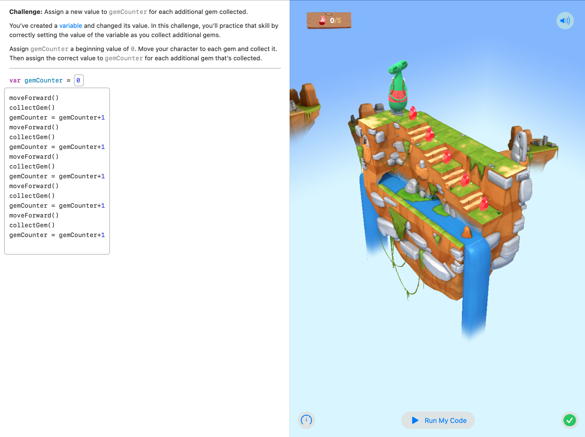
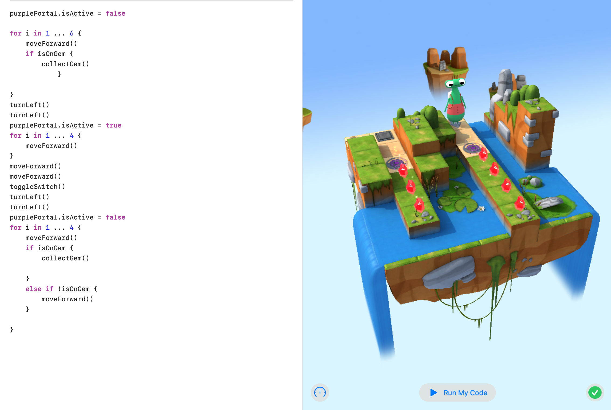

Concepts Covered
- Variables: Named storage locations in memory that hold data values, allowing for data manipulation.
- Initialization: The process of assigning an initial value to a variable at the moment of its creation.
- Types: Different categories of data (such as integers, strings, and booleans) that define what kind of values a variable can hold.
- Parameters: Variables used in functions that allow passing data into them, enabling dynamic behavior.
- World Building: The practice of creating and defining environments or contexts in programming, often used in games and simulations.
- Arrays: Data structures that store multiple values in a single variable, allowing for efficient organization and manipulation of lists of data.
Visuals and Media
Here are some resources related to this module:

